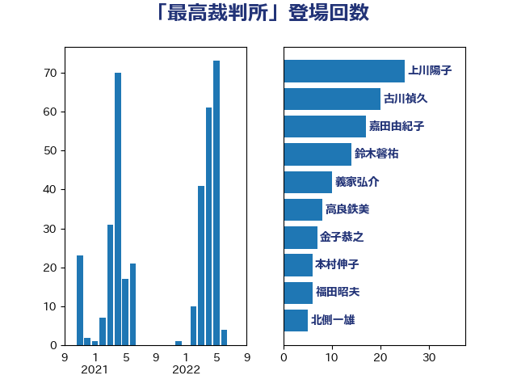

単語「最高裁判所」

| 上川陽子 | 自由民主党 | 25 回 |
| 古川禎久 | 自由民主党 | 20 回 |
| 嘉田由紀子 | 無所属 | 17 回 |
| 鈴木馨祐 | 自由民主党 | 14 回 |
| 義家弘介 | 自由民主党 | 10 回 |
| 高良鉄美 | 無所属 | 8 回 |
| 金子恭之 | 自由民主党 | 7 回 |
| 本村伸子 | 日本共産党 | 6 回 |
| 福田昭夫 | 立憲民主党 | 6 回 |
| 北側一雄 | 公明党 | 5 回 |
| 塩村あやか | 立憲民主党 | 4 回 |
| 福島みずほ | 社会民主党 | 4 回 |
| 松沢成文 | 日本維新の会 | 3 回 |
| 田所嘉徳 | 自由民主党 | 3 回 |
| 石川大我 | 立憲民主党 | 3 回 |
| 稲富修二 | 立憲民主党 | 3 回 |
| 階猛 | 立憲民主党 | 3 回 |
| 井林辰憲 | 自由民主党 | 2 回 |
| 前川清成 | 日本維新の会 | 2 回 |
| 小野田紀美 | 自由民主党 | 2 回 |
| 山下芳生 | 日本共産党 | 2 回 |
| 東徹 | 日本維新の会 | 2 回 |
| 橋本岳 | 自由民主党 | 2 回 |
| 浜田靖一 | 自由民主党 | 2 回 |
| 熊田裕通 | 自由民主党 | 2 回 |
| 矢倉克夫 | 公明党 | 2 回 |
| 石川博崇 | 公明党 | 2 回 |
| 石破茂 | 自由民主党 | 2 回 |
| 磯崎仁彦 | 自由民主党 | 2 回 |
| 三木圭恵 | 日本維新の会 | 1 回 |
| 伊藤孝江 | 公明党 | 1 回 |
| 加藤勝信 | 自由民主党 | 1 回 |
| 北神圭朗 | 無所属 | 1 回 |
| 古川俊治 | 自由民主党 | 1 回 |
| 吉川沙織 | 立憲民主党 | 1 回 |
| 吉田宣弘 | 公明党 | 1 回 |
| 吉田統彦 | 立憲民主党 | 1 回 |
| 奥野総一郎 | 立憲民主党 | 1 回 |
| 安江伸夫 | 公明党 | 1 回 |
| 宮本岳志 | 日本共産党 | 1 回 |
| 山下雄平 | 自由民主党 | 1 回 |
| 山本香苗 | 公明党 | 1 回 |
| 岡本あき子 | 立憲民主党 | 1 回 |
| 島尻安伊子 | 自由民主党 | 1 回 |
| 平井卓也 | 自由民主党 | 1 回 |
| 後藤茂之 | 自由民主党 | 1 回 |
| 斉藤鉄夫 | 公明党 | 1 回 |
| 新垣邦男 | 立憲民主党 | 1 回 |
| 日下正喜 | 公明党 | 1 回 |
| 末松信介 | 自由民主党 | 1 回 |
| 根本匠 | 自由民主党 | 1 回 |
| 津島淳 | 自由民主党 | 1 回 |
| 浅田均 | 日本維新の会 | 1 回 |
| 浜田聡 | NHK党 | 1 回 |
| 清水真人 | 自由民主党 | 1 回 |
| 田中英之 | 自由民主党 | 1 回 |
| 田村まみ | 国民民主党 | 1 回 |
| 田村憲久 | 自由民主党 | 1 回 |
| 羽田次郎 | 立憲民主党 | 1 回 |
| 萩生田光一 | 自由民主党 | 1 回 |
| 藤原崇 | 自由民主党 | 1 回 |
| 逢沢一郎 | 自由民主党 | 1 回 |
| 金田勝年 | 自由民主党 | 1 回 |
| 鈴木庸介 | 立憲民主党 | 1 回 |
| 鈴木義弘 | 国民民主党 | 1 回 |
| 鎌田さゆり | 立憲民主党 | 1 回 |
| 高木かおり | 日本維新の会 | 1 回 |
| 高橋はるみ | 自由民主党 | 1 回 |